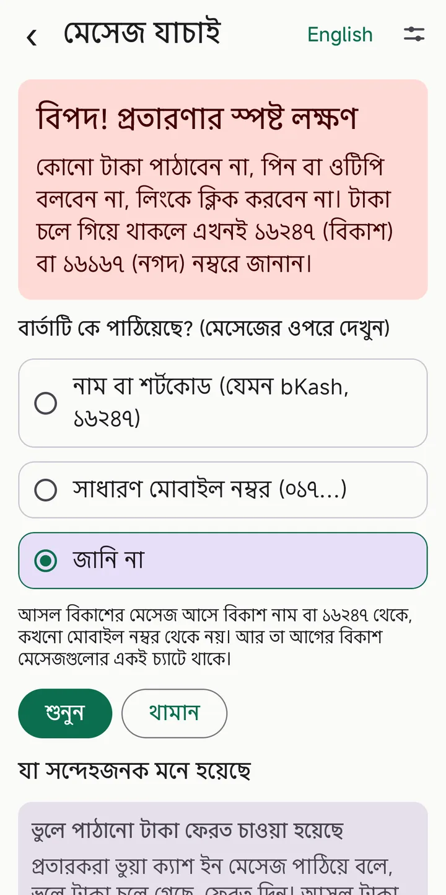
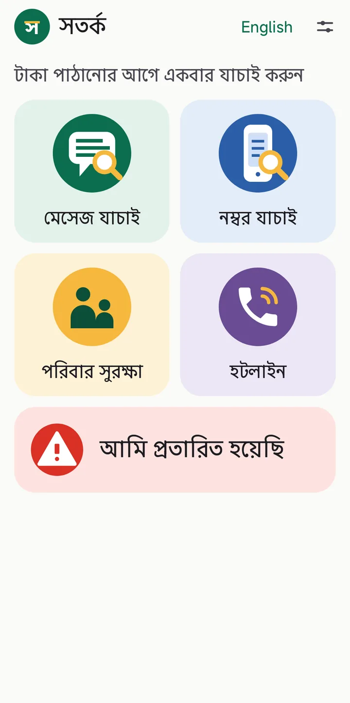
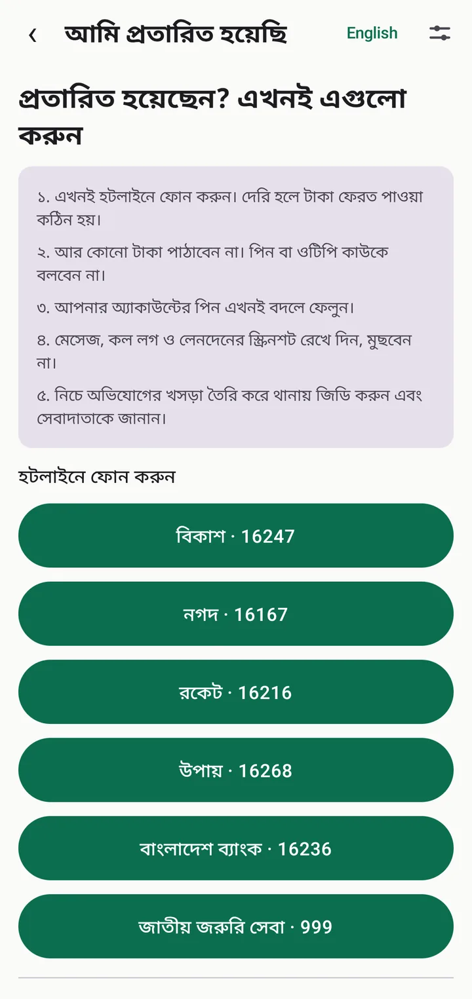
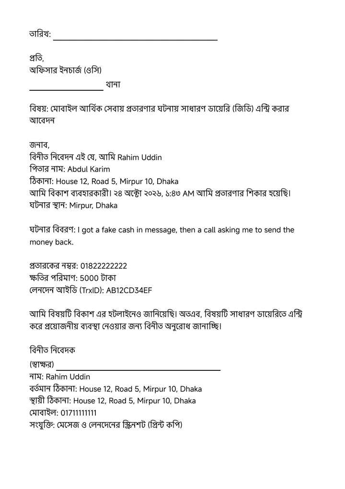
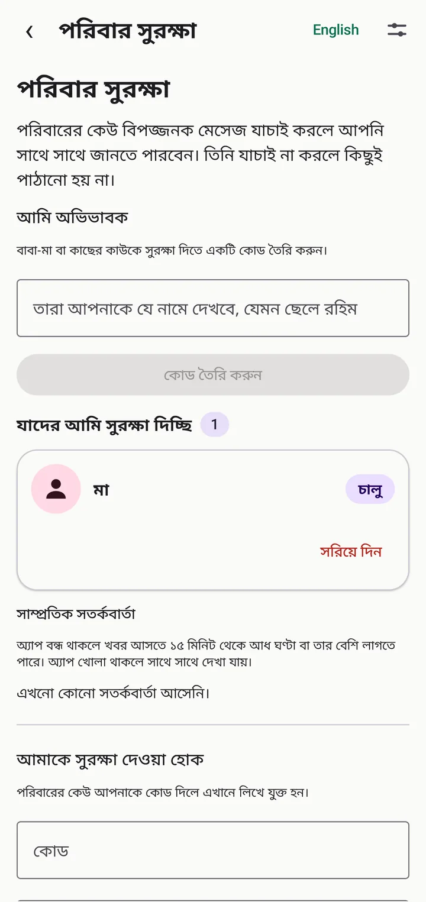

সতর্ক ০.৪.১
- কে মেসেজ পাঠিয়েছে সেই প্রশ্নটি আরও পরিষ্কার: প্রতারকও নাম ব্যবহার করতে পারে, তাই শুধু নাম দেখে ভরসা নয়।
- ব্যাংক থেকে জমা ও বিল পেমেন্টের আসল বিকাশ মেসেজ ভুল করে সন্দেহজনক দেখানো হবে না।
- স্ক্রিনশট ও স্টোর বিবরণ হালনাগাদ।
সতর্ক আপনার ফোনেই সন্দেহজনক মেসেজ ও নম্বর যাচাই করে, প্রতারণার লক্ষণ বাংলায় বুঝিয়ে দেয় এবং শুনিয়েও দেয়। বিকাশ, নগদ বা ব্যাংকের নামে আসা ভুয়া মেসেজ চিনতে সাহায্য করে।

সূত্র: Policy Research Institute, "State of DFS Consumer Protection in Bangladesh" (জরিপ: ৭,২৭৯ জন ব্যবহারকারী, ৪৫টি জেলা, প্রকাশ আনুমানিক ২০২২)।
মেসেজ অ্যাপ থেকে সরাসরি সতর্কে শেয়ার করুন, অথবা লেখাটি পেস্ট করুন।
নাম বা শর্টকোড, নাকি সাধারণ মোবাইল নম্বর, এক ট্যাপেই জানান। কিছু লিখতে হয় না।
ঝুঁকির মাত্রা কারণসহ বাংলায় দেখুন। চাইলে অ্যাপ পড়ে শোনাবে।




ছবির মেসেজ ও তথ্য বানানো উদাহরণ। এখানে কারো আসল তথ্য নেই।
একটি নম্বর নিয়ে অন্যরা কতবার অভিযোগ করেছেন, দেখুন। চাইলে নিজেও অভিযোগ করুন। এগুলো যাচাই-না-করা অভিযোগ, কারো সম্পর্কে রায় নয়।
বাবা-মা কোনো বিপজ্জনক মেসেজ যাচাই করলে আপনি জানতে পারবেন। দুজনের সম্মতিতে, আর যেকোনো সময় বিরতি বা বন্ধ করা যায়।
এখনই কী করবেন তার জরুরি ধাপ (মোবাইল বা সিম হারালে সিম বন্ধ ও মোবাইল ব্যাংকিং স্থগিতের চেকলিস্ট সহ) আর হটলাইনে এক ট্যাপে ফোন। বিকাশ বা নগদ প্রতারণা ছাড়াও হারানো ফোন, সিম, জাতীয় পরিচয়পত্র ও দলিলপত্রের জন্য ঢাকা মেট্রোপলিটন পুলিশ ও বাংলাদেশ পুলিশের স্ট্যান্ডার্ড ফরম্যাটে থানার জিডি আবেদন নিজে থেকে পূর্ণ হয়ে যায়, পড়ার মতো বড় লেখায় প্রিন্ট বা PDF করা যায়। সেবাদাতার অভিযোগের খসড়া আর পুলিশের অফিসিয়াল অনলাইন জিডি ফর্মে বসানোর বিবরণও পাবেন।
বিকাশ ১৬২৪৭, নগদ ১৬১৬৭, রকেট ১৬২১৬, উপায় ১৬২৬৮, বাংলাদেশ ব্যাংক ১৬২৩৬, জাতীয় জরুরি সেবা ৯৯৯, এক ট্যাপে।
অ্যাপের ভেতরেই পাঁচটি সোনালি নিয়ম, চেনা প্রতারণার গাইড আর সাধারণ প্রশ্নের উত্তর। ইন্টারনেট ছাড়াই পড়া যায়।
আপনার ফোনে "ক্যাশ ইন" মেসেজ আসে, তারপর ফোন: "ভুলে টাকা চলে গেছে, ফেরত দিন।"
কী করবেনআগে নিজে অ্যাপ খুলে ব্যালেন্স দেখুন। আসল টাকা এলে অ্যাপেই দেখা যায়। না এলে টাকা পাঠাবেন না।
কেউ বিকাশ, নগদ বা ব্যাংকের কর্মকর্তা সেজে পিন বা ওটিপি চায়।
কী করবেনওরা কখনো এসব চায় না। কাউকে বলবেন না, লাইন কেটে দিন।
"অভিনন্দন, আপনি জিতেছেন" বা "ভাতা পেতে এই লিংকে ক্লিক করুন।"
কী করবেনঅচেনা লিংকে ক্লিক করবেন না। ভাতা বা পুরস্কারের জন্য ফি বা পিন লাগে না, আগে টাকা পাঠাতেও হয় না।
"এখনই কেওয়াইসি আপডেট না করলে অ্যাকাউন্ট ব্লক হবে।"
কী করবেনমেসেজের নম্বরে নয়, নিজে অফিসিয়াল হটলাইনে ফোন করে জেনে নিন।
বিআরটিএ বা পুলিশের নামে মেসেজ: গাড়ির জরিমানা বাকি, টাকা দেওয়ার লিংক, অল্প সময়ের সীমা আর মামলার ভয়, কখনো তাড়াতাড়ি দিলে অর্ধেক ছাড়ের লোভ।
কী করবেনলিংকে টাকা দেবেন না। নিজে অফিসিয়াল ওয়েবসাইট খুলুন বা অফিসে খোঁজ নিন। সময়সীমা আর ভয় দেখানোই প্রতারকের চাপ।
কোনো গ্রুপ বা অ্যাপ সহজ কাজে দৈনিক আয়ের লোভ দেখায়, তারপর অ্যাক্টিভেশন, ভেরিফিকেশন বা উইথড্র ফি চায়, তারপর আবার টাকা।
কী করবেননিজের আয় তুলতে সত্যিকারের প্রতিষ্ঠান টাকা চায় না। প্রথম ফি-তেই থেমে যান; আবার চাওয়াই প্রতারণার চিহ্ন।
"আপনার পার্সেল আটকে আছে, রিডেলিভারি চার্জ দিন", প্রায়ই লিংকসহ; পরে "সার্ভার এরর" বলে আরও টাকা। অনলাইন দোকান আগে সামান্য অগ্রিম নেওয়ার পরেও এমন হয়।
কী করবেনকুরিয়ারের অফিসিয়াল নম্বরে নিজে ফোন করুন। বারবার চার্জ চাইলে আর দেবেন না; পার্সেল একটি অজুহাত হতে পারে।
কেউ বলে আপনার নামে মামলা হয়েছে, তারপর টাকা, পিন বা ব্যাংকের তথ্য চায়, বা কোনো নম্বরে ফোন করতে বলে।
কী করবেন৯৯৯ বা পুলিশ কখনো পিন বা ব্যাংকের তথ্য চায় না। লাইন কেটে নিজে ৯৯৯-এ বা থানায় ফোন করুন। ফোনের পর্দার নম্বর নকলও হতে পারে।
ফোনে বা চ্যাটে বলা হয়, আপনার আত্মীয়ের দুর্ঘটনা বা বিপদ, এখনই বিকাশ বা নগদে টাকা পাঠান; কখনো নকল কণ্ঠ বা হ্যাক করা একাউন্টে।
কী করবেনটাকা পাঠানোর আগে ওই মানুষটিকে আপনার জানা নম্বরে বা পরিবারের অন্য কাউকে ফোন করে নিশ্চিত হন।
না। অ্যাপটি এসএমএস, কল লগ বা কন্টাক্টের অনুমতি চায় না। আপনি যে মেসেজ শেয়ার বা পেস্ট করেন, শুধু সেটিই যাচাই হয়।
না। সতর্ক পরিচিত প্রতারণার ধরন খোঁজে। নতুন ধরন বা অন্যভাবে লেখা মেসেজ সে ধরতে নাও পারে। সন্দেহ হলে হটলাইনে ফোন করুন।
অ্যাপের নিয়মগুলো বিকাশের সতর্কতা, সরকারের সাইবার নিরাপত্তা দল (বিজিডি ই-গভ সার্ট), পুলিশের হুঁশিয়ারি আর সংবাদে জানা প্রতারণার ধরন অনুযায়ী বানানো। যাচাই হয় আপনার ফোনেই, আপনার মেসেজ থেকে অ্যাপ কিছু শেখে না। নতুন ধরন অ্যাপ আপডেটের মাধ্যমে আসে, তাই নতুন বা অন্যভাবে লেখা প্রতারণা সে ধরতে নাও পারে।
সাধারণত কয়েক সেকেন্ডের মধ্যে, অ্যাপ বন্ধ থাকলেও, কারণ অভিভাবকের ফোনে একটি পুশ নোটিফিকেশন পাঠানো হয়। ফোন ব্যাকগ্রাউন্ডের বার্তা আটকে দিলে (যেমন ব্যাটারি সেভার) প্রায় ১৫ মিনিট বা তার বেশি লাগতে পারে। নোটিফিকেশনে মেসেজের লেখা থাকে না।
না। শুধু আপনি "পরিবার সুরক্ষা"-য় সম্মতি দিয়ে যুক্ত হলে এবং কোনো মেসেজ বিপজ্জনক ধরা পড়লে, ওই মেসেজ আপনার বেছে নেওয়া অভিভাবকের কাছে যায়।
না। অনলাইন জিডি করতে হয় পুলিশের অফিসিয়াল অনলাইন জিডি সিস্টেমে, আপনার নিজের এনআইডি, লাইভ ছবি ও ওটিপি দিয়ে। সতর্ক শুধু কী লিখবেন তা তৈরি করে দেয় এবং ধাপগুলো দেখায়।
হ্যাঁ, এটি ঢাকা মেট্রোপলিটন পুলিশ ও বাংলাদেশ পুলিশের জেনেরিক জিডি ফরম্যাট অনুসরণ করে তৈরি: তারিখ, ওসি ও থানার ঠিকানা, পিতা/স্বামী ও মাতার নাম, জাতীয় পরিচয়পত্র নম্বর, বর্তমান ও স্থায়ী ঠিকানা, ঘটনার বিবরণ ও বিনীত নিবেদক। থানাভেদে নিজস্ব মুদ্রিত ফর্ম থাকলে এটি দেখে তা সহজেই পূরণ করতে পারবেন।
না। অন্যদের জানানো অভিযোগ শুধু "অভিযোগ" হিসেবে, যাচাই-না-করা দাবি হিসেবে দেখানো হয়। কারো সম্পর্কে রায় দেওয়া হয় না।
না। সতর্ক একটি স্বতন্ত্র অ্যাপ। বিকাশ, নগদ ও অন্য নামগুলো তাদের নিজ নিজ মালিকের।
Google Play-তে প্রকাশের কাজ চলছে। প্রকাশের খবর পেতে আমাদের ইমেইল করুন।
Azimul Kabir Apu, একজন স্বাধীন ডেভেলপার।